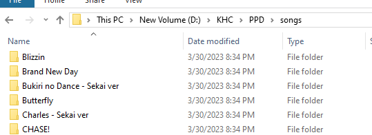
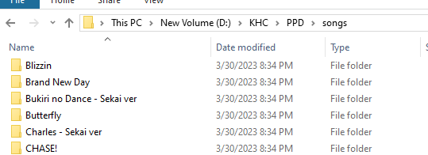

- How to Add Songs -
There are two main ways to download songs to play on PPD:
A. Manually Downloading Charts From The Official PPD Website
1. Click here to visit the official PPD website's score library. Every song uploaded to the website will be available here. There are a LOT of pages of songs to browse through - it goes all the way back to 2012.
To search for a specific song, look up either the English or the Japanese title (romaji or kana) in the search bar. The website will not take incorrect or similar spelling, so you will need to be broad enough to make sure you are able to find what you are looking for.
2. Once you've found a chart to play, click the blue 'Download' button on the chart page on the website.
3. Extract the folder from the .zip file (it should be titled the name of the song you downloaded). Then, put that folder into your songs folder in the KHC folder.
 

4. You will also need to separately download the video associated with the chart. The webpage will have a target url for you to copy and use to download the video you need.

You could use any converter to download the video, but we recommend this site if it's a YouTube video.
5. Place the .mp4 video file into the folder you just downloaded (for example, the folder titled 'All Star by Smash Mouth').
It should look like this:
Now, as long as that song (for example, All Star by Smash Mouth) folder is in your 'songs' folder (the big one that has all of your songs in it) you should be able to open PPD and play it.
B. Downloading Song Packs
Check out our Song Packs page to browse and download song packs from our community chart designers!
These song packs include charts that already have a .mp4 video file in their folder, so you don't have to download and add them manually yourself.
Simply download a song pack, extract it, then drag and drop the songs you want/the whole song pack folder into your 'songs' folder (the one in the main 'PPD' folder, which is in your 'KHC' folder.)
*You can also find these song packs pinned in the #ppd-archive channel of our community Discord server.
This guide was originally written by MarathonGuy (PPD's #1 Steins;Gate Enjoyer). Thank you, Marathon!